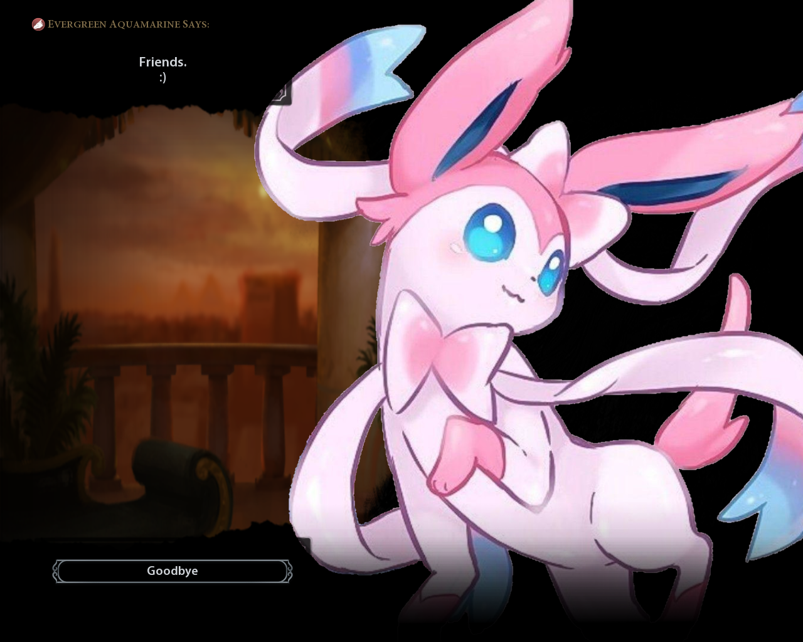

Evergreen Aquamarine Leader
A mod for Sid Meier's Civilization VI
Civ 6 is one of my favorite games. You need to manage an empire across differant ages of history. Starting in the ancient era with slingers and clubbers, you'll end in the future era with giant mechs the size of cities. I have always adored this game, and I was feeling like modding it, so I ended up making a mod that adds in myself!
I wanted to keep my privacy intact, so I used my steam username - Evergreen Aquamarine - as my name. I chose Sylveon to represent myself for a number of reasons, but most of all they're just one of my favorite Pokémon and I didn't want to use my real face for this mod. It's because of this image that I set the mod to friends only. I've been using this image for a long time as my profile picture, but I can't find where it originates from or what usage license it's under. Playing it safe, I just made this mod for myself and a few friends.
Otherwise, this mod is a kind of realistic interpretation of how I'd manage an empire - kind of. Since this is just a game, I can be very hostile and greedy when I play in order to gain an advantage towards victory. The other people I play with have picked up on this, so they never trust me and know that I am a warmonger. So I made my leader an amalgamation of how I would actually rule and how I play the game.
Starting with how I would actually rule, my character is very informal. If I were in a position of power, I would just want to be myself instead of masking myself. Additionally, my leader is very much a tree hugger. They get reduced yields from chopping down forested areas or otherwise destroying the natural world for human advancement. As a bonus, however, all natural features that are "unappealing" - like rainforests and marshes - become beautiful. My nation can also build a special preservation district, and can build unique building inside of it that boost the output of nearby natural features without harming them. Finally, they also cannot build coal or oil powerplants since I hate them due to their environmental impact. Instead, I get bonuses to nuclear power plants since I have a personal interest in them and they're very clean.
My characters personality is based on how I as a player would play the game.

Published on Steam, set to friends only